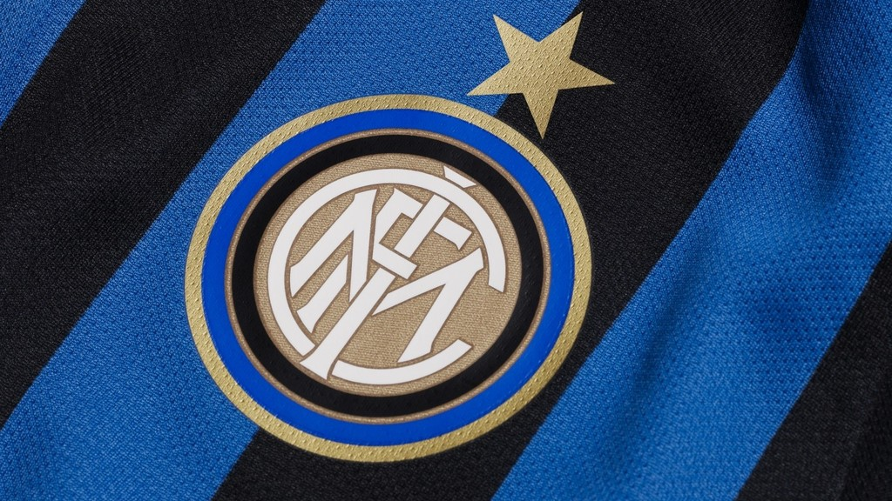
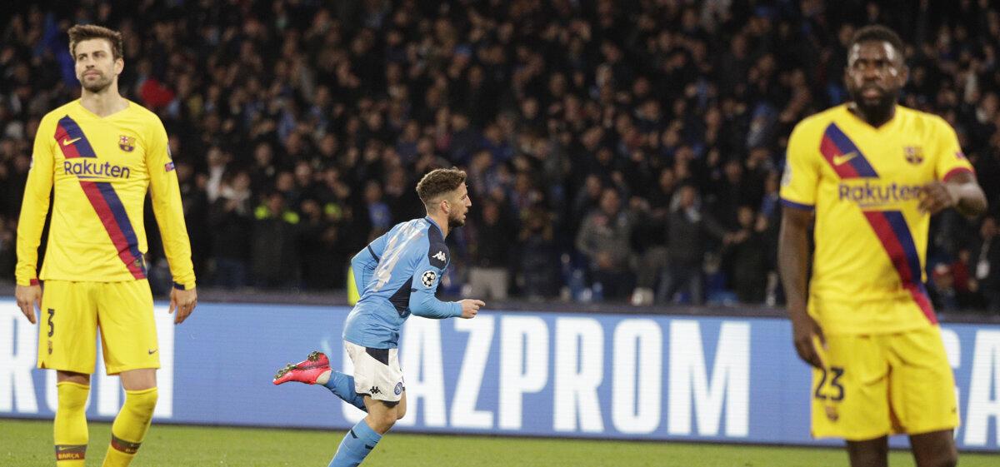
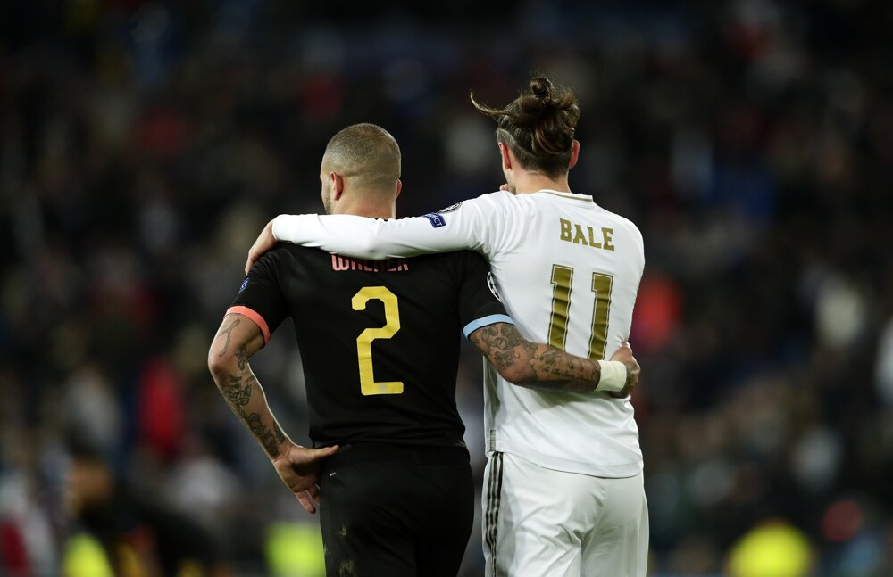

KoronavÃrus ovplyvnà Ligu majstrov

Odvetný duel osemfinále futbalovej Ligy majstrov medzi FC Valencia a Atalantou Bergamo (10. marca o 21.00) sa pre hrozbu koronavÃrusu bude hraÅ¥ pred prázdnymi tribúnami. V prvom zápase zvÃÅ¥azil taliansky klub na domácom Å¡tadióne 4:1.
Ako v utorok uviedol Å¡panielsky minister zdravotnÃctva Salvador Illa, bez divákov sa bude hraÅ¥ aj odvetný súboj Európskej ligy UEFA medzi Getafe a Interom Miláno (19. marca). Prvý zápas je na programe 12. marca o 21.00 h na San Sire. Dres "nerazzurri" oblieka aj slovenský reprezentaÄný stopér Milan Å kriniar.
Taliansko je najviac zasiahnutou krajinou v Európe. Infikovaných je už vyÅ¡e 2000 ľudÃ, poÄet úmrtà spôsobených nákazou novým typom koronavÃrusu SARS-CoV-2 sa zvýšil už na 52.
Juraj Slivka, 3.3.2020
Barcelona len remizovala

Å panielsky majster zaÄal v Neapole aktÃvne, mal vysoké držanie lopty a postupne súpera pritlaÄil k jeho Å¡estnástke.Mal územnú prevahu, ale nedokázal z nej niÄ vyÅ¥ažiÅ¥.
Hostia v prvom dejstve nenasmerovali do priestoru súperovej brány ani jednu strelu, pretože obrana Neapola fungovala výborne.V 30. minúte otvoril skóre domáci Dries Mertens po rýchlej akcii, keÄ Juniorovi Firpovi odskoÄila lopta a po kontre a výbornej prihrávke ZieliÅského eÅ¡te krajÅ¡ou technickou strelou poslal loptu do brány.
Obraz hry sa nezmenil, no hosÅ¥om sa podarilo prvýkrát poriadne vykombinovaÅ¥ až v 57. minúte, keÄ prienikovú prihrávku Sergia Busquetsa využil Nelson Semedo na presné posunutie ku Antoinemu Griezmannovi a ten dorazil loptu do siete.Neapol pokraÄoval v umnom výkone a nedovolil hosÅ¥om žiadne veľké Å¡ance.V závere si neudržal nervy na uzde Arturo Vidal a musel predÄasne do Å¡atne po Äervenej karte.Do odvety pôjde s miernou výhodou Barcelona.
Juraj Slivka, 2.3.2020
Real Madrid nezvládol záver a prehral

Po opatrnom úvode zápasu v Madride mali prvú veľkú šancu hostia. Kevin De Bruyne vysunul v 21. minúte Gabriela Jesusa, ten sa presadil medzi dvomi obrancami, ale jeho prudkú strelu vyrazil Thibaut Courtois.
Domáci mali tutovku po polhodine hry. Mendy poslal z ľavej strany center do Å¡estnástky, Benzema sa dostal k hlaviÄke, ktorú Ederson výborne vyrazil. Po jeho zákroku sa eÅ¡te neúspeÅ¡ne snažil o dorážku Vinicius.City muselo v 33. minúte nútene striedaÅ¥ a namiesto zraneného Laporteho priÅ¡iel do hry Fernandinho. V ÄalÅ¡om priebehu bolo aktÃvnejÅ¡ie i nebezpeÄnejÅ¡ie.
Po výbornej Jesusovej prihrávke namieril Bernardo Silva len do stredu brány a v závere polÄasu zabránil gólu na bránkovej Äiare Casemiro.Po zmene strán mal Riyad Mahrez v krátkom slede dve dobré prÃležitosti, ale v oboch ho vychytal Courtois.V 60. minúte ale priÅ¡la chyba v rozohrávke Citizens, nasledoval rýchly brejk Realu a Isco otvoril skóre - 1:0.
Zverenci Zinedine Zidana však náskok neudržali. V 78. minúte poslal De Bruyne spomedzi troch súperov presný center na hlavu Jesusa a bolo 1:1 a o päť minút neskôr už hostia viedli.
Striedajúceho Sterlinga zastavil v Å¡estnástke faulom Dani Carvajal a De Bruyne premenil pokutový kop - 1:2.Real navyÅ¡e priÅ¡iel v závere aj o svojho kapitána. Sergio Ramos sa dostal do kontaktu s unikajúcim Jesusom a rozhodca mu udelil Äervenú kartu.Nemôže tak nastúpiÅ¥ v odvete.
Juraj Slivka, 1.3.2020